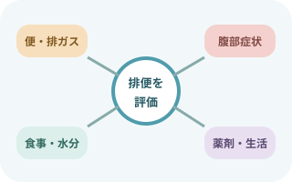
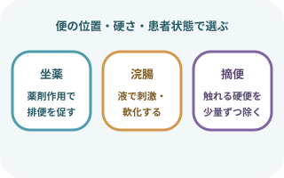
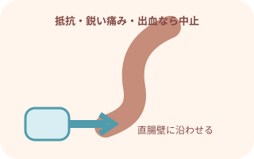
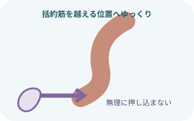
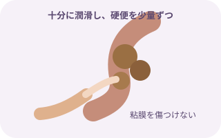
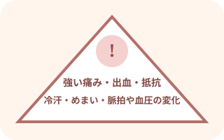
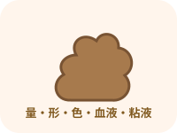
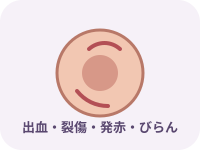
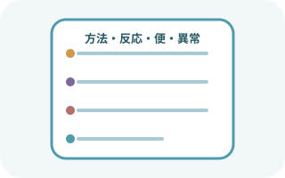

処置の前に止まる条件
- 腸管出血、腹腔内炎症、腸閉塞、穿孔またはその疑い
- 直腸・肛門・大腸の手術直後、放射線治療後、重い痔核・裂肛・直腸病変
- 好中球減少、血小板減少、出血傾向、抗凝固薬使用
- 重い心疾患、不整脈、循環不安定
- 脊髄損傷、特にT6以上など自律神経過反射の危険
- 妊娠、炎症性腸疾患、ストーマなど個別判断が必要な状態
まず排便を評価する

便だけでなく経過と全身を見る
最終排便、普段の回数・形、排ガス、残便感、腹痛・膨満、悪心・嘔吐、食事・水分、活動、薬剤を確認。
直腸診は必要性と禁忌を判断し、権限・院内手順に沿って行う。
- 便の量、硬さ、色、血液・粘液、ブリストル便形状スケール
- 便意、いきみ、排出困難、肛門痛、残便感
- 腹部膨満、圧痛、腸蠕動音、悪心、嘔吐、食欲
- 水分・食事摂取、活動、排泄環境、トイレ動作
- オピオイド、抗コリン薬、鉄剤など便秘に関わる薬剤
- 下剤・浣腸・坐薬の使用歴と効果
処置を使い分ける

便の位置・硬さ・薬剤作用で選ぶ
坐薬：直腸で溶け、薬剤に応じて蠕動や排便反射を促す。
浣腸：液を直腸へ入れ、刺激・軟化・滑りを利用する。
摘便：直腸内に触れる硬便を、必要時に少量ずつ除去する。
慢性便秘の管理は直腸処置だけで完結しない。原因、生活、経口薬、排便姿勢、骨盤底機能などを評価し、長期計画を見直す。
共通の準備
- 指示された浣腸薬または坐薬
- 水溶性潤滑剤
- 非滅菌手袋、エプロン、必要時マスク・眼の防護
- 防水シート、便器・ポータブルトイレまたはおむつ
- 清拭・陰部洗浄物品、交換用下着・パッド
- 廃棄物袋
- 必要時、血圧計・パルスオキシメータ
- 本人確認と説明
目的、方法、予想される便意・腹痛、途中で中止できることを説明し同意を得る。
- 排泄方法を先に決める
トイレ移動の可否、便器・おむつ、ナースコール、転倒リスクを確認。
- プライバシーと保温
カーテン・扉を閉め、露出を最小限にする。換気と臭気にも配慮。
- 左側臥位を基本に調整
膝を軽く曲げ、安定させる。疼痛、麻痺、術後制限があれば無理に固定しない。
浣腸

直腸壁に沿わせ、抵抗に逆らわない
先端を十分に潤滑し、製品の挿入目安・ストッパーに従ってゆっくり挿入。
強い抵抗、鋭い痛み、出血があれば注入せず中止する。
- 薬剤を照合
患者、製品、濃度・容量、期限、禁忌、容器破損を確認。温め方が必要な製品は表示に従い、過熱しない。
- 左側臥位と防水
臀部を観察して防水シートを敷き、肛門が見える範囲だけ露出。
- 先端を潤滑して挿入
臀部を開き、肛門・直腸の走行に沿わせる。成人でも固定した深さを一律に使わず、製品表示と抵抗で判断。
- ゆっくり注入
患者へ呼吸を促し、表情、腹痛、冷汗、気分不良を観察。抵抗時に圧をかけない。
- 抜去して排便を援助
可能な範囲で薬剤の指示時間を保ち、便意が強ければ我慢を強制しない。安全に便器・トイレへ。
坐薬

肛門括約筋を越えて直腸内へ
薬剤名・規格・個数を照合し、必要時に水溶性潤滑剤を使用。
挿入方向と深さ、保持時間、保管方法は製品表示に従う。
- 薬剤を照合
患者、薬剤、規格、個数、期限、包装、保管状態を確認。
- 左側臥位へ
防水シートを敷き、肛門周囲の傷、出血、便塊を観察。
- ゆっくり挿入
臀部を開き、呼気に合わせて肛門括約筋を越える位置まで挿入。無理に押し込まない。
- 安楽な体位で待つ
すぐ排出されないよう必要時間を保つが、強い便意や苦痛を我慢させない。
- 効果を観察
排便までの時間、便量・性状、腹痛、出血、薬剤の排出を確認。
摘便

触れる硬便を少量ずつ
十分に潤滑した手袋の示指一本を、直腸壁に沿ってゆっくり挿入。
硬便を小さく分け、粘膜や肛門括約筋を傷つけないよう少量ずつ除く。
- 適応と危険因子を再確認
直腸内の硬便、他の方法の効果、出血・感染・循環・自律神経過反射リスクを確認。
- 左側臥位と観察準備
膝を軽く曲げ、防水シートを敷く。必要時は処置前後の脈拍・血圧を測定。
- 十分に潤滑
示指へ水溶性潤滑剤を十分につけ、深呼吸と呼気を促す。
- ゆっくり挿入
直腸壁に沿って示指一本を進める。痛み、抵抗、出血があれば中止。
- 便塊を小さく除去
無理に一塊で引き出さない。短時間ずつ行い、患者の反応と疲労を確認。
- 終了後の清潔と再評価
肛門周囲をやさしく清潔にし、腹部症状、排便感、出血、バイタルサインを確認。
処置中の中止サイン

痛み・出血・循環変化で止める
強い腹痛・肛門痛、出血、強い抵抗、顔面蒼白、冷汗、悪心、めまい、意識変化、脈拍低下、血圧変化。
処置を中止して安全な体位をとり、応援要請と観察・報告へ。
- 直腸刺激で徐脈、血圧低下、冷汗、悪心、失神を起こすことがある
- 処置を止め、意識・気道・呼吸・脈拍・血圧を確認
- 症状が続く、重い徐脈・低血圧、意識障害では急変対応へ
- T6以上の脊髄損傷などでは、直腸刺激が急激な血圧上昇、頭痛、発汗、紅潮を起こすことがある
- 処置を中止し、上体を起こし、血圧を確認して院内手順に沿う
処置後の観察とケア


- 便・薬液をこすらず除去し、皮膚を乾燥させる
- 必要時は皮膚保護剤を製品表示に従って使用
- 水分摂取、食事、活動、トイレ環境、定時排便を無理のない範囲で支援
- 処置を繰り返さないと出ない場合は、便秘の原因と長期計画を見直す
記録

処置と結果をつなげて残す
実施日時、適応、薬剤・容量・個数、方法、患者の反応、便の量・性状、出血・疼痛、中止理由、報告内容。
ブリストル便形状スケールなど、施設で統一された表現を使う。
出典
- Minds・日本消化管学会「便通異常症診療ガイドライン2023―慢性便秘症」
- PMDA「グリセリン浣腸液50％『ケンエー』電子添文」
- PMDA「テレミンソフト坐薬10mg」
- Queensland Spinal Cord Injuries Service「Digital removal of faeces」
- NHS Improvement「Resources to support safer bowel care for patients at risk of autonomic dysreflexia」
- National Cancer Institute「Gastrointestinal Complications: Fecal Impaction」